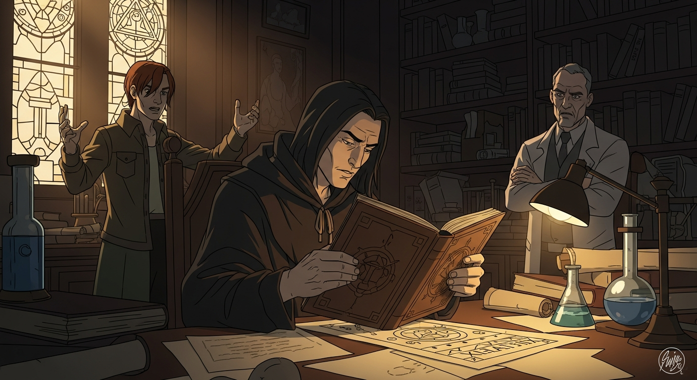
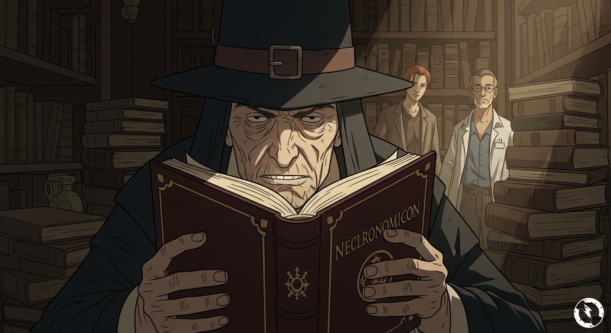

Clarke’s *Mysterious World*…a childhood obsession. I remembered a tantalizing reference—'Node in Volume.' It led me to Alexander F, a collector of esoteric texts. He claimed to possess a fragment of Agrippa’s notes. It spoke of an 'Alchemist’s Last Secret' hidden within a *Picatrix*. A whisper, he said, now gone, linked somehow to *Evil Dead*.

Dee's *Invisibilia Dei* pointed to an archive. Agrippa's spectral guardian tested me with riddles—symbols of unchecked knowledge. It was Agrippa's *own* doubt. I showed him I understood: the past whispers warnings, not just invitations. The fragment's power isn't the secret itself, but the *responsibility* it demands.